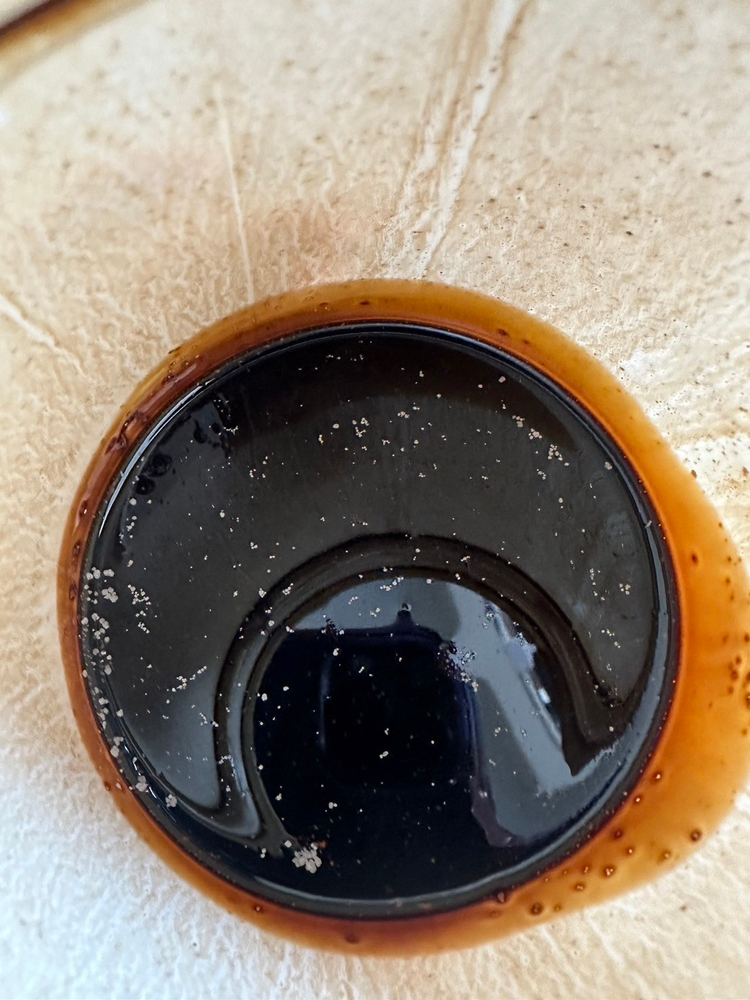
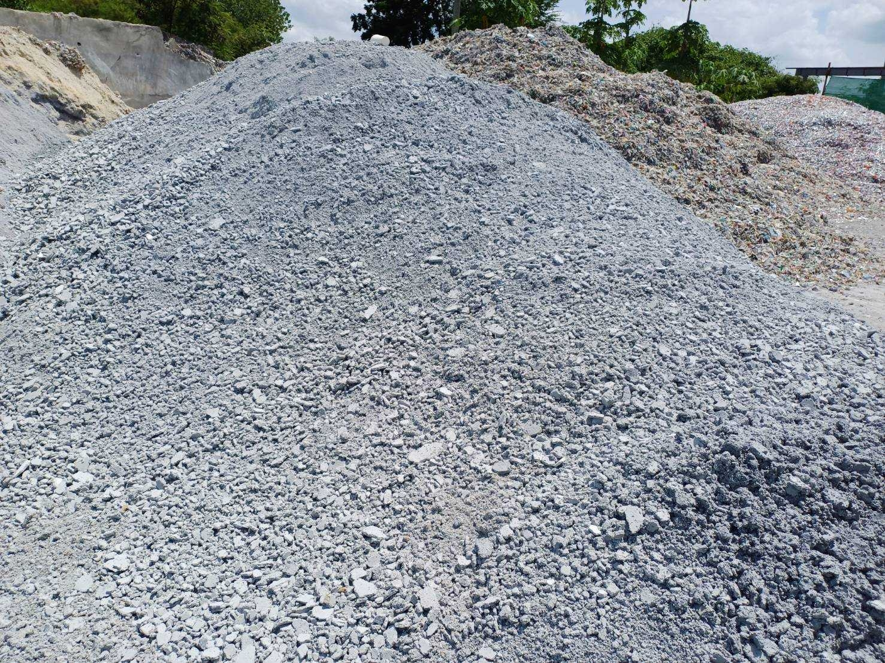

<!-- Services Section -->
<section class="py-4 my-4">
    <div class="container">
        <div class="fs-2 fw-bold text-center" style="color: #127bda;">งานประเภทรับกำจัดกากอุตสาหกรรม</div>
        <!-- <div class="fs-4 text-center">กากอุตสาหกรรมรับกำจัดเป็นวัตถุดิบร่วมทำปุ๋ยและปรับปรุงดิน (083)</div> -->
        <div class="row">
            <div class="col-12 col-lg-6 my-2 text-center">
                
            </div>
            <div class="col-12 col-lg-6 my-2 text-center">
                
            </div>
            บริการบําบัด/กําจัดกากอุตสาหกรรม
            บริษัท โกลบอลโพรเท็ค จํากัด
            นําเสนอบริการบําาบัด/กําจัดกากอุตสาหกรรมที่เหมาะสมกับกากอุตสาหกรรมประเภทนั้นๆ
            เช่น
            การนําไปเป็นวัตถุดิบร่วมหมักทําปุ๋ย (083) • การนํากลับมาใช้ประโยชน์อีกด้วยวิธีอื่นๆ (049) •
            การทําเชื้อเพลิงผสม (042)
            • การนําไปเป็นเชื้อเพลิงทดแทน (041)
            การนําไปเป็นวัตถุดิบทดแทนในเตาเผาปูนซีเมนต์ (044),
            • การฝังกลบขยะไม่อันตราย (071)
            การฝังกลบขยะอันตราย (073)
            โดยมีขั้นตอนการให้บริการ ดังนี้
            1. นัดหมายเก็บตัวอย่างกากของเสีย
            2. นําเสนอวิธีกําจัดที่เหมาะสม
            3. เสนอราคาค่าบริการ (1 วันทําการ) 4. เมื่อตกลงใช้บริการ
            5. ส่งวิเคราะห์ LAB (ภายใน 15 วันทําการ) 6. ขออนุญาต กอ.1 (7-15 วันทําการ) 7. นัดหมายขนส่งกากของเสียไปกําจัด
         
        </div>
    </div>
</section>